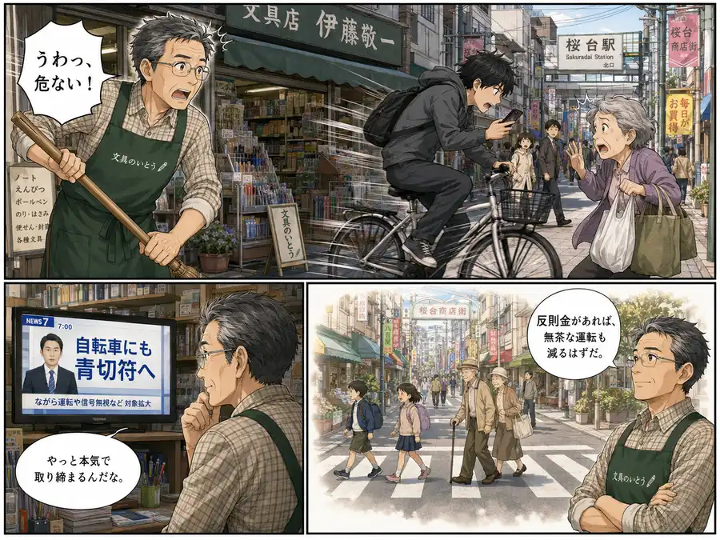
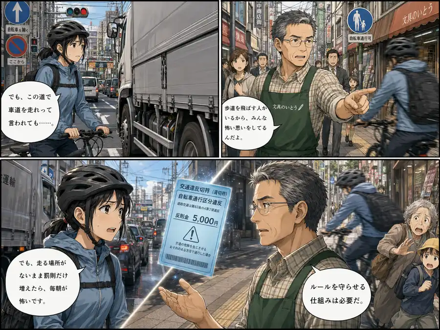
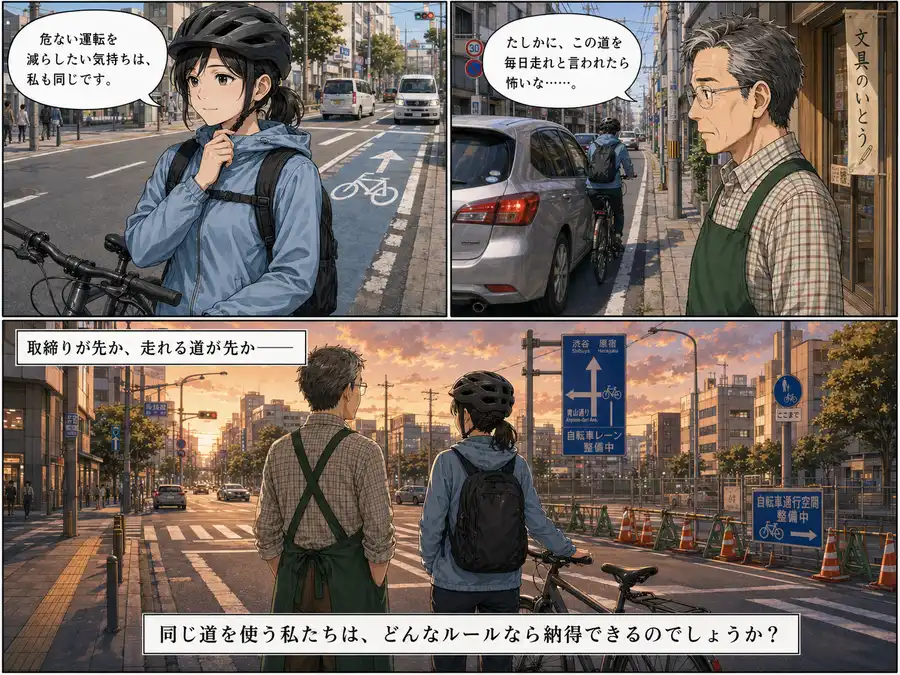

取締り強化
危険運転対策として取締りを支持
34件
危険な走行やマナー違反を取り締まり、歩行者や周囲の安全を確保するために必要であるとする立場。
Yahooリアルタイム検索で取得したSNS投稿を、取締り強化賛成、インフラ優先、車道走行への不安、免許制要求などの論点で整理したビューです。世論調査ではありません。
商店街の店主と自転車通勤の会社員——同じ道を使う二人が、青切符をめぐってそれぞれの怖さと願いをぶつけ合います。



※ この漫画はSNS上の代表的な意見をもとに構成したフィクションです
自転車の「青切符」による反則金。事故やマナー違反を防ぐための厳罰化か、それとも危険な車道へ走らせる無理なルールか？
結果を見る前に — あなたの感覚に近いのは？
※ 世論調査ではありません。投票は集計されサーバーに保存されます。
危険な走行やマナー違反を取り締まり、歩行者や周囲の安全を確保するために必要であるとする立場。
安全に走れるインフラ（自転車レーンなど）が十分にない中で、取り締まりだけを先行させることに納得がいかない立場。
車道の狭さや車の至近走行の危険から車道原則に恐怖を感じ、結果として歩道通行も狭められることに反対する立場。
標識を理解しない運転手が多いため、反則金のみならず原付のような免許制度や事前講習を導入すべきとする立場。
違反の成立基準が現場で分かりにくいことや、警察の点数・反則金集め目的ではないかという不信感による反対。
罵倒、単なる怒り、事実誤認など、そのままでは記事化に注意が必要な反応。
| 分類 | 自転車 取締り 強化 | 自転車 青切符 おかしい | 自転車 青切符 やりすぎ | 自転車 青切符 インフラ | 自転車 青切符 免許 | 自転車 青切符 反対 | 自転車 青切符 当然 | 自転車 青切符 賛成 | 自転車 青切符 車道 怖い | 自転車 青切符 道路 | 合計 |
|---|---|---|---|---|---|---|---|---|---|---|---|
| 取締り強化賛成・マナーや危険運転の改善を期待 | 10 | 0 | 1 | 0 | 1 | 0 | 10 | 5 | 0 | 7 | 34 |
| インフラ未整備への不満・専用レーンの設置が先決 | 0 | 1 | 0 | 17 | 1 | 1 | 0 | 0 | 0 | 11 | 31 |
| 車道走行への不安・原則車道は事故を増やすと反対 | 4 | 2 | 0 | 0 | 1 | 1 | 0 | 0 | 2 | 4 | 14 |
| 制度が不十分・青切符に留まらず自転車も免許制にすべき | 1 | 4 | 0 | 0 | 29 | 2 | 0 | 0 | 1 | 4 | 41 |
| ルールが曖昧・現場の混乱や取り締まりへの不審で反対 | 1 | 4 | 1 | 0 | 0 | 3 | 0 | 0 | 1 | 2 | 12 |
| その他・分類保留 | 14 | 8 | 1 | 0 | 0 | 8 | 0 | 2 | 2 | 10 | 45 |
| 分類 | 賛成（取締り強化） | インフラ優先 | 車道走行懸念 | 免許制要求 | 混乱懸念 | その他 | 合計 |
|---|---|---|---|---|---|---|---|
| 取締り強化賛成・マナーや危険運転の改善を期待 | 34 | 0 | 0 | 0 | 0 | 0 | 34 |
| インフラ未整備への不満・専用レーンの設置が先決 | 0 | 30 | 0 | 0 | 0 | 1 | 31 |
| 車道走行への不安・原則車道は事故を増やすと反対 | 0 | 0 | 13 | 0 | 0 | 1 | 14 |
| 制度が不十分・青切符に留まらず自転車も免許制にすべき | 0 | 0 | 0 | 41 | 0 | 0 | 41 |
| ルールが曖昧・現場の混乱や取り締まりへの不審で反対 | 0 | 0 | 0 | 0 | 12 | 0 | 12 |
| その他・分類保留 | 0 | 0 | 0 | 0 | 4 | 41 | 45 |